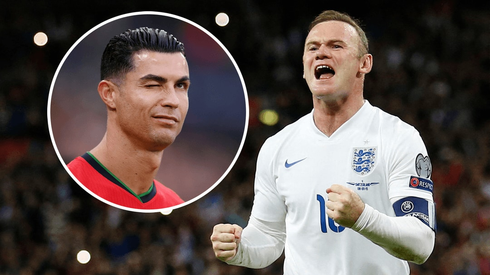

2006 World Cup 'Wink-Gate' — Sank Rooney
The Rooney red-card story: In the 2006 World Cup quarter-final, England against Portugal. In the 62nd minute Rooney stamped on Carvalho and was shown red. Ronaldo — at the time Rooney's United teammate — was first to swarm the referee to apply pressure, indirectly contributing to the card.
The infamous wink: After the red was shown, cameras caught Ronaldo winking at the Portuguese bench. All of England read it as a 'mission accomplished' celebration — he had successfully grassed up his club-mate to clear Portugal's path.
The Mirror's 'winker': The British tabloids opened fire, and the Daily Mirror etc. slapped Ronaldo with the humiliating moniker 'the winker'. He became public enemy No.1 in England; fans burned his United shirt in droves and demanded the club ship him out.
Nearly ended his United career: Former United defender Wes Brown revealed the Old Trafford dressing room at one point verged on splitting over the incident. Rooney's relationship with Ronaldo hit rock bottom; Ferguson had to personally mediate to barely glue them back together.
Rooney's lingering grudge: Years later Rooney still fumed in his autobiography and interviews, saying he 'would rather Portugal didn't qualify for the World Cup'. Even after the two publicly reconciled, the betrayer's sting of that wink still lingers in the English mind.
Scheming versus winning: Supporters plead that Ronaldo was 'just ultra-competitive', but using club-mate bonds as a tactical chip is precisely that utilitarian-to-the-bone streak that exposes his willingness to do anything to win. Winning above all, friendship aside — the cold undertone of Ronaldo's character.
The Rooney reconciliation: Despite the incident, Cristiano and Rooney kept playing together at United and publicly reconciled over the years. But «Winkgate» remained a stain on his career.
Verdict: The wink that sank Rooney captured the most calculating side of Cristiano: a player willing to harm a club teammate if it benefited his national team. «Winkgate» remains one of his most embarrassing images.